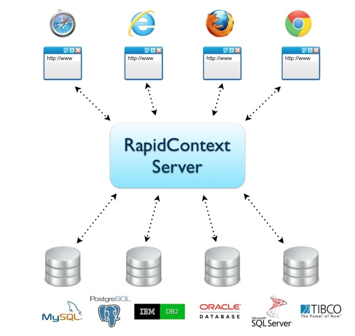

- Documentation
- Introduction
1. Introduction
1.1. Overview
RapidContext is a platform for building and hosting web applications. It
is ideal for creating and distributing web-based tools on an intranet and
provides a number of important advantages:
- Simple Connectivity — Data access via
JDBC,
web services, messaging buses and more is built-in or readily available.
This makes it easy to integrate with and connect to existing data sources
and external systems.
- Data Discovery — Using built-in components and
tools, it is easy to create apps for exploring data across multiple
systems. With an additional bit of knowledge of business rules and data
models, unique tools for side-by-side comparisons, data analysis or
drill-down search are quickly created.
- Plug-In Architecture — The RapidContext platform
is built on a plug-in architecture, allowing new connectors, services and
applications to be deployed at run-time. New and updated plug-ins are
available both from the RapidContext web site and from third
parties.
- Administrative Tools — An easy-to-use web app
for managing users, connections and all other aspects of the system comes
built-in with RapidContext. This makes it simple to manage and maintain
multiple installations and/or complex configurations needed to fully
serve corporate environments.
1.2. Standard Setup
RapidContext provides a web application environment with both client (web
browser) and server components. The client and server parts are integrated,
providing easy-to-use solutions for all the common issues that arise in a web
environment (authentication, permissions, etc).
The web browser runs the web applications and manages the user interface.
In the standard setup, multiple applications are running on a single web page.
Data is fetched asynchronously in the background without blocking the user
from other parallel tasks.
The RapidContext server handles user authentication, sessions, permissions,
data connectivity, transactions, etc. The server runs the actual database
queries or remote sessions, while posting results back to the web applications
in a convenient JSON data
format.

1.3. Features
Using RapidContext for building web tools, connecting to databases or
managing servers has a number of advantages compared to other toolkits or
direct access via
SQL,
SSH or similar.
- Knowledge Sharing — All SQL queries and system
commands used are stored on the RapidContext server for reuse and easy
inspection. This improves knowledge sharing and information transfer
between co-workers. It also helps with eliminating mistakes and data
issues, since changes propagate immediately to all users.
- Resource Footprint — Transactions and connection
pooling is built-in and used whenever supported by the data source. This
means that many users can efficiently share a small number of external
connections.
- Robust Security — User authentication,
authorization and auditing mechanisms are available to guarantee
the integrity of applications and data. Since users share connections,
the direct access and number of accounts on external systems can also be
reduced.
- Flexible Scripting — JavaScript is supported both
on the client and the server side, providing a powerful programming
environment for business logic, data transformations, validations or any
kind of data handling.
- Efficient Workflows — A well-designed browsing
user interface is at least an order of magnitude faster to work with than
switching between multiple SQL and shell windows. Since computations are
mostly performed in the client browsers, a single server can handle more
users than a standard application server.
1.4. Concepts & Terminology
A number of terms are used repeatedly in the RapidContext documentation and
elsewhere. Their definitions are as follows:
- App — A client-side application that runs in the
web browser, normally in a tab in the standard user interface or as a
stand-alone browser tab or window. Apps are installed on the server, but
execute solely on the client. Multiple apps can be executing at the same
time, allowing the user to switch between different tasks and
transferring data between apps.
- Connection — A named link to a database or
another system. Each connection is managed on the server, normally by
a handler for that specific connection type. Most connections are kept
in a pool of established connections where they are continually
monitored and closed if no longer needed.
- Environment — A group of connections sharing an
identifier prefix. Using different environments, it is possible to
switch between servers easily. The environment name is also given
prominent display in the standard user interface.
- Identifier — A unique identity for an object
in the RapidContext storage. The identifier should consist only of ASCII
alphanumeric characters, preferably in lower-case. Hierarchical
identifiers (containing
/
characters) are also possible, as for
example connection/jdbc
for the JDBC connection
type.
- Plug-in — A ZIP file containing Java libraries,
procedures, apps, configuration or file data. A plug-in is the standard
distribution mechanism for all kinds of add-on functionality in
RapidContext.
- Procedure — A server-side operation that can
be invoked from the client. The operation may take arguments, modify
data and/or return a value depending on implementation. A typical
procedure could for example consist of a parameterized SQL query.
- Role — A set of permissions (or limits) for
resource usage and access. Each user is assigned one or more roles,
providing the user with the sum of the role permissions. The default
built-in role
admin
provides full access to everything,
and should be used with care.
- Session — An active client (browser) session to
the RapidContext server. The session can be either authenticated (for a
single user) or anonymous. Sessions are created when applications are
launched and a user may have multiple active sessions in different web
browsers.
- Storage — A server-side virtual file system for
storing data and objects. The storage handles both persistent (file) and
temporary (in-memory) objects, allowing some objects to
“shadow” others. All active plug-ins are mounted to the
storage and overlaid on the root storage tree, providing a single
unified storage view for all objects.
- Storage Path — An object location in the
RapidContext storage. The storage path is formed from the object type
and identifier as [type]/[identifier]. Only the base type is
used when searching for objects in the storage, i.e.
connection/
instead of
connection/jdbc/
.
- Type — A server-side descriptor and optionally
an associated Java handler for a piece of data in the RapidContext
storage. The type contains meta-data and descriptions for all recognized
properties of the type, similar to a Java class or an XML schema.
- User — A login identity, usually assigned to a
physical person. Each user has an identifier, a name, a description and
a password. The user may also have one or more roles, which in turn
control the user access permissions.